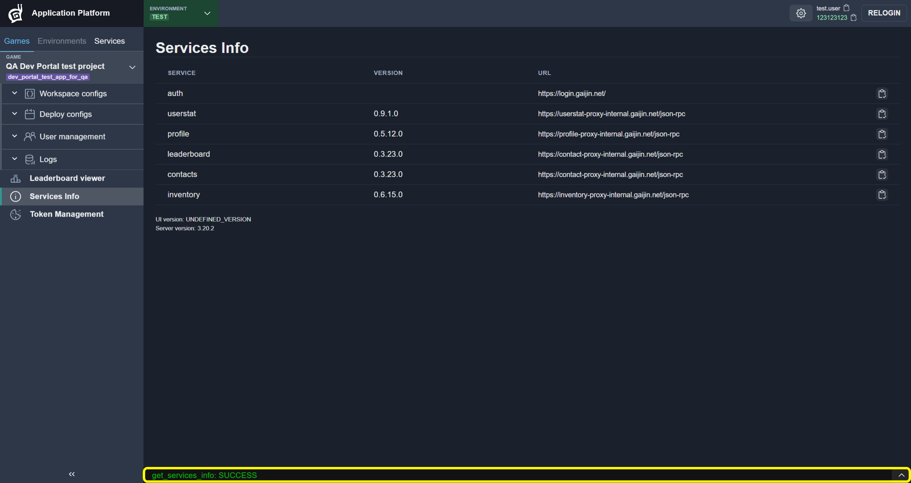
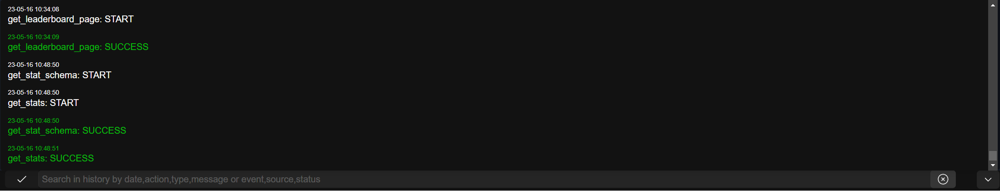
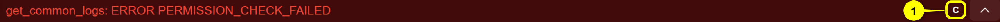
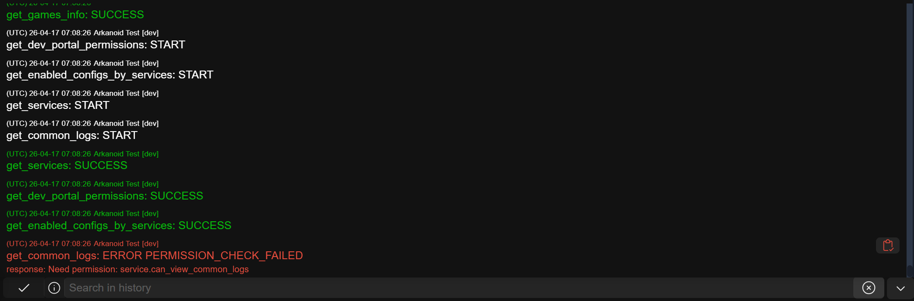
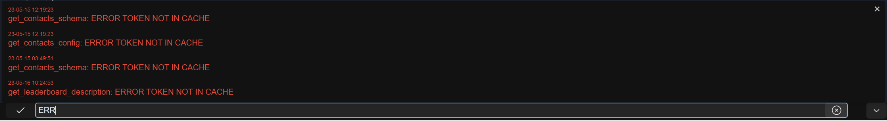
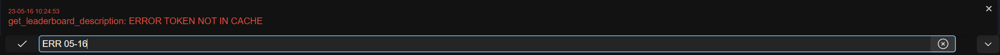
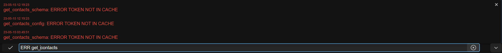
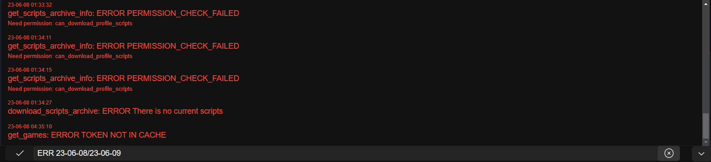
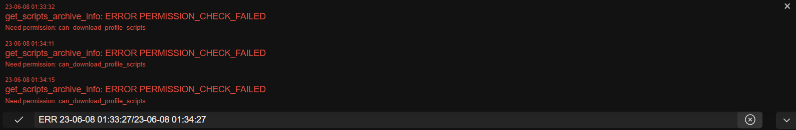

Console
All action statuses indicating date and time of requests are written to the console.
To open console click Arrow button:
{kind=link}

Now you can see last actions results. Console is scrollable.
{kind=link}

Error Highlight
If any request returns an error, the console will be highlighted in red.
{kind=link}

The highlighting can be cleared in two ways:
Button (1) — manually clear the console highlighting
Automatically, after opening the console and scrolling to the error
{kind=link}

Console Filter
You can filter console output, just enter a part of words separated by Space to filtering.
Data can be filtered by date, action, type and error message.
Filter Errors
Input ERR:
{kind=link}

Filter Errors by Date
Input ERR and part of cureent date, for example: ERR 05-16:
{kind=link}

Filter Errors by Action
Input ERR and part of action name, for example: ERR get_contacts
{kind=link}

Filter Errors by Date Range
Input the first date and the second date separated by /, for example: ERR 23-06-08/23-06-09.
{kind=link}

Add time for a more accurate filtering, for example ERR 23-06-08 01:33:27/23-06-08 01:34:27
{kind=link}
